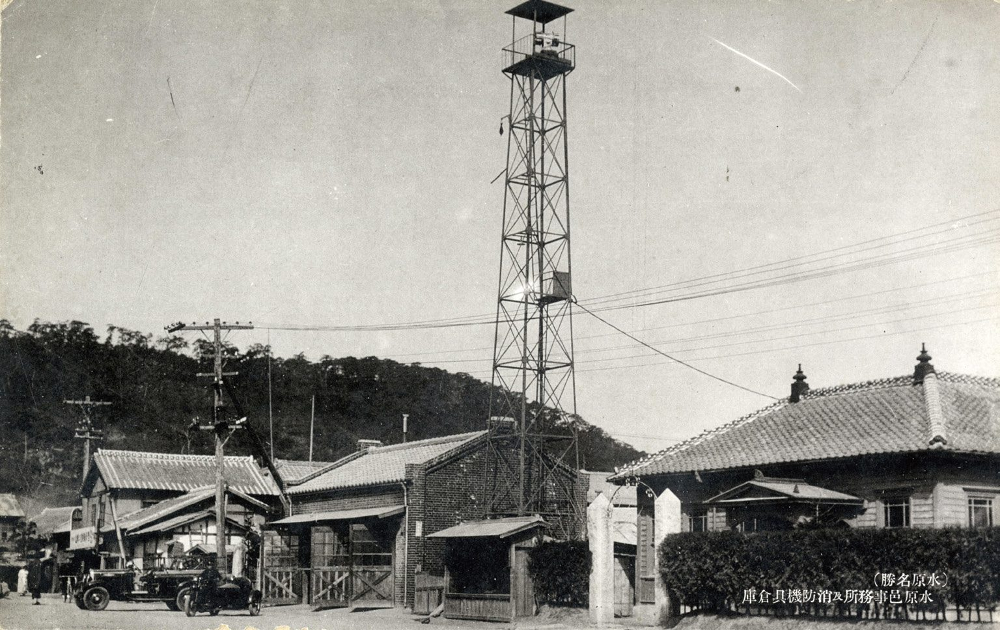
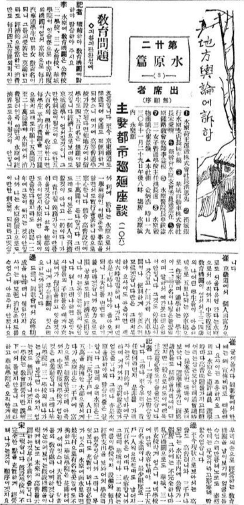
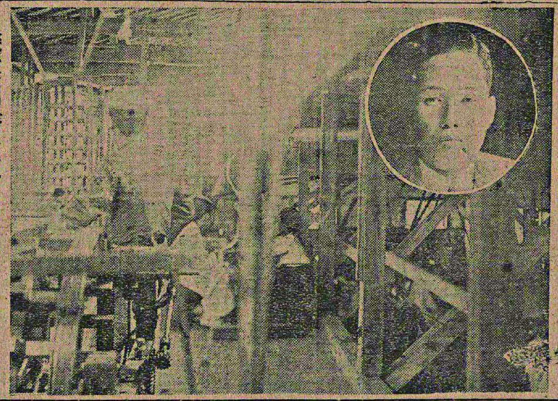
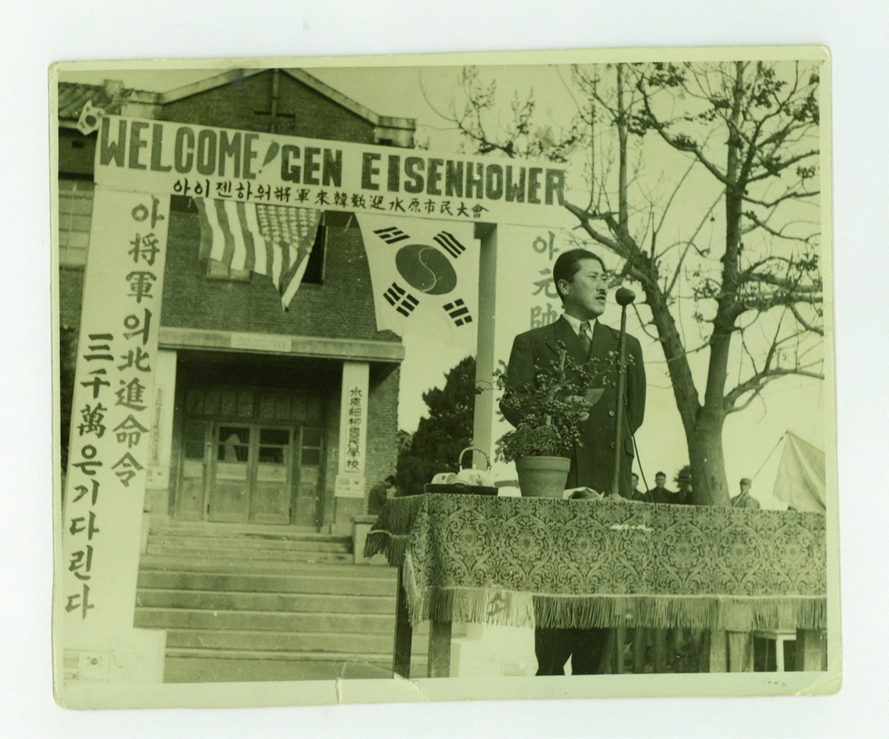
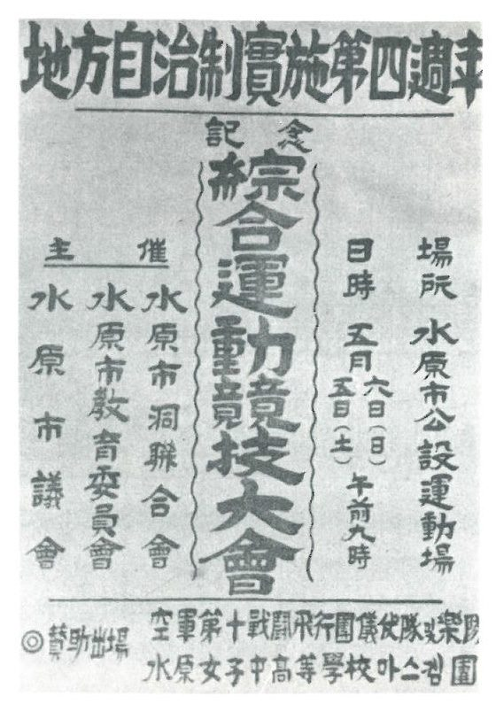
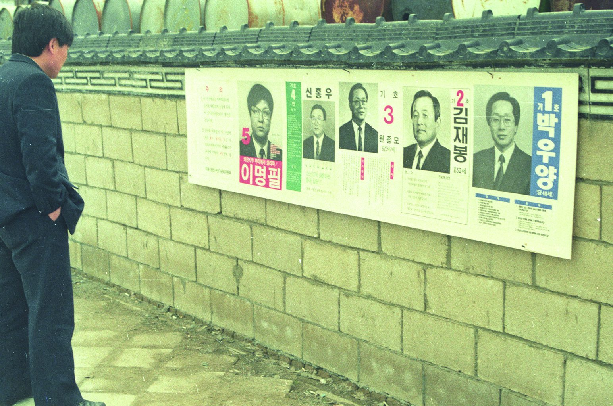
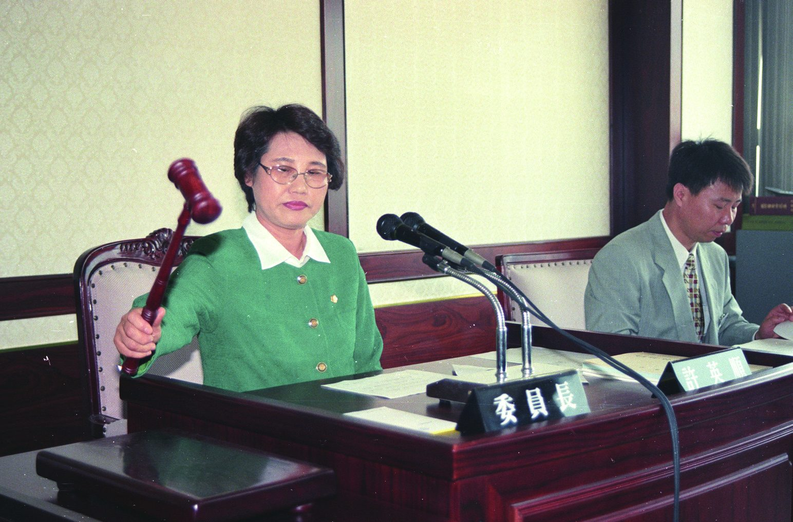
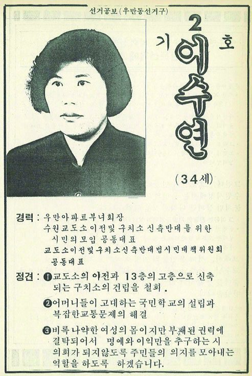
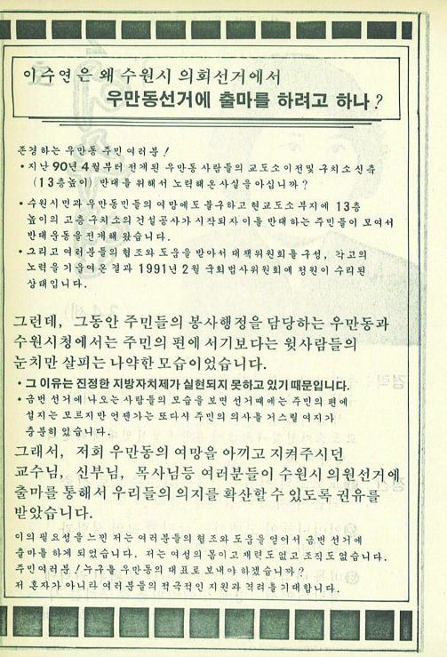

“태초의 정치는 자치일 수밖에 없다.”「수원시의원들의 사회적 배경」 중에서
유지의 시대
1931년 3월, 수원면협의회 선거가 치러졌다. 선거로 구성된 면회는 4월 1일 수원면이 수원읍으로 승격되면서 읍회가 되었다. 수원읍회의 정원은 12명, 조선인과 일본인이 각각 6명씩이었다.
의원 가운데는 놀랄 만큼 젊은 이들도 있었다. 1929년 면협의원 선거 기사에 따르면 당선된 조선인 홍사선과 윤태인은 20세, 이완선은 21세, 이길태는 17세였다. 1939년 읍회 선거에서는 의석이 14명으로 늘었고 그중 8명이 조선인이었다.
이들 대부분은 회사 중역과 상공인이었다. 경제적 실력을 갖추고 공적 영역으로 진출하는 것, 그것이 식민지 시기 지방의원이 되는 일반적인 경로였다.



전쟁 속의 첫 시의회
해방 이후 이승만 정권은 시기상조론과 치안·안보를 이유로 지방자치 실시에 미온적이었다. 수원시의회가 처음 문을 연 것은 전쟁이 한창이던 1952년이었다.
초대 의원은 한 명을 제외하고 모두 수원 토박이였고, 40대가 주축이었다. 가장 많은 경력은 동사무소 같은 행정기관 근무였고, 해방 공간의 우익 정치활동 경력이 그 뒤를 이었다.
초대 전기 부의장 차인순은 경성제2고보를 졸업한 뒤 정미소를 운영해 자산가가 되었다. 초대 의원 최학배와 장남 최종건은 제1대와 제2대 시의원을 잇따라 지내 부자가 연이어 시의원이 되는 진기한 사례를 남겼다.
“전후 1950년대 수원의 지역 유지들은 정치적으로 우파적이며 사회적으로 자산가층이었다.”「수원시의원들의 사회적 배경」 중에서


30년 만의 부활
1991년 지방자치제가 부활하면서 수원도 기초자치단체가 되었고, 먼저 수원시의회가 구성되었다. 1950년대 이후 무려 30년 만이었다.
그사이 수원은 전혀 다른 도시가 되었다. 10만 명이 채 안 되던 인구는 60만 명을 넘어섰고, 그 증가분의 대부분은 산업화와 이촌향도에 따른 사회적 증가였다.
“사람은 아버지보다 시대를 닮는다는 아랍 속담처럼 수원의 시의원들도 시대를 닮는다.”「수원시의원들의 사회적 배경」 중에서
1990년대 이후의 시의원은 크게 세 갈래로 나뉜다. 사업으로 성공한 뒤 여러 사회단체 활동으로 기반을 닦은 지역 유지형, 관변단체와 정치활동 출신, 그리고 사회운동이 분화하고 시민운동이 활성화되면서 등장한 시민운동 출신이다.

여성, 의회에 들어서다
2002년 발간된 『수원시의회사』는 제4대 이수연 의원을 수원시의회의 첫 여성 의원으로 소개한다. 그러나 그 소개 글은 여성 의원을 바라보는 젠더화된 시선을 그대로 드러낸다. 남성 중심 사회에서 시의원이 된 여성은 남다른 무언가를 보여 주어야 한다는 강박이 그 배경에 있었다.
여성의 정치 진출은 기존 질서를 타고 이루어지는 경우가 많았다. 제5대 허영순 의원 역시 권선구와 팔달구 새마을부녀회장을 시작으로 정치 이력을 쌓았다. 2000년대 후반 이후에야 민중운동과 시민운동을 거쳐 의회에 들어서는 여성 의원들이 나타나기 시작했다.



“가장 낮은 곳에 위치했던 여성들이 가장 높은 정치무대로 비상할 수 있다면 그만큼 수원 지역정치의 미래는 밝을 것이다.”
자산가와 관료 출신 중장년 남성이 중심이던 시의회는 진보적·개혁적이고, 수원 출신이 아닌 여성들까지 포괄하게 되었습니다. 지방자치가 소수 집단이 아니라 모든 주민을 포괄하는 주민자치로 나아갈 가능성입니다.